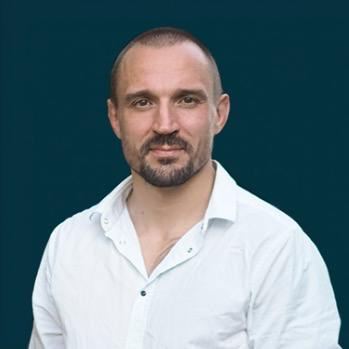
MD, PhD · врач‑исследователь · архитектура + оценка + внедрение
Проектирую клинические AI‑системы для реального внедрения: архитектура, оценка, ограничения безопасности и контроль в эксплуатации.
Цель — системы, которые остаются безопасными и предсказуемыми, когда данные меняются, а контекст далёк от идеального.
Александр Лебедев, MD PhD ·
LinkedIn
·
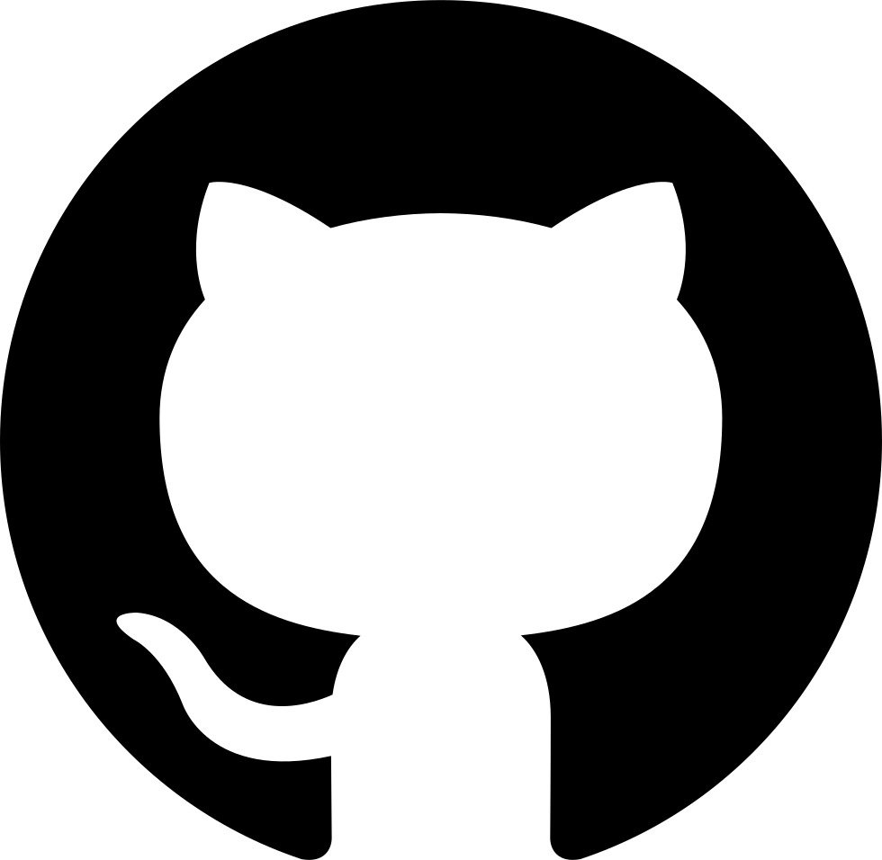
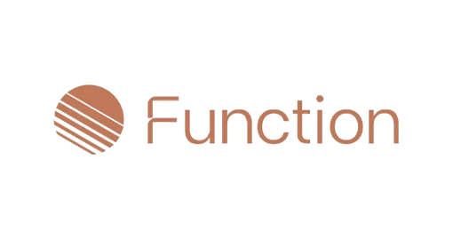
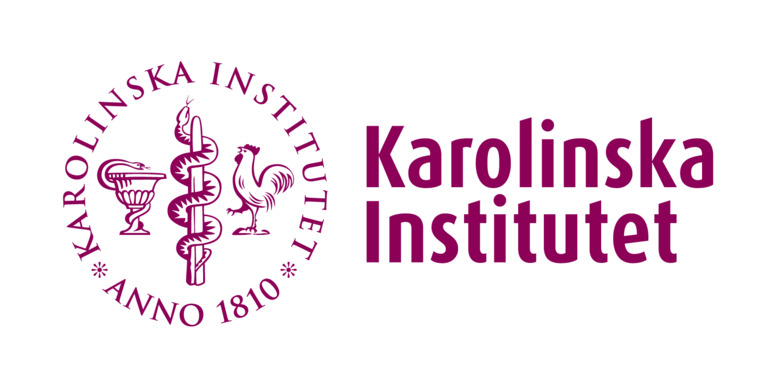
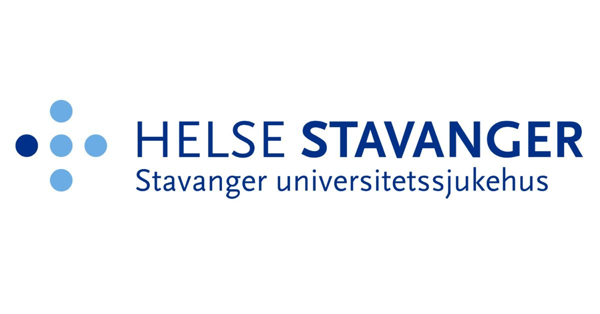
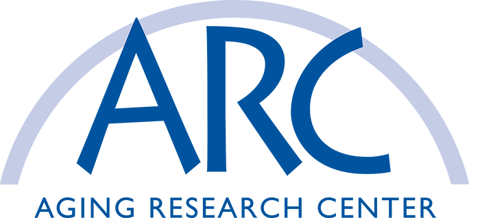
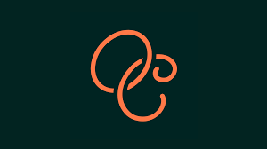
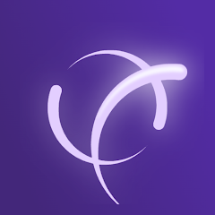
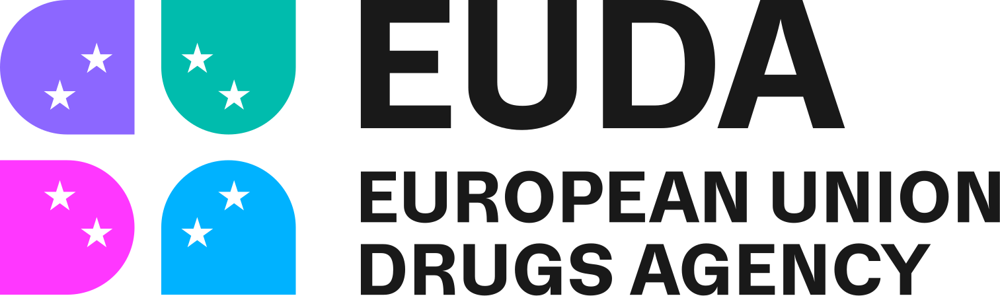
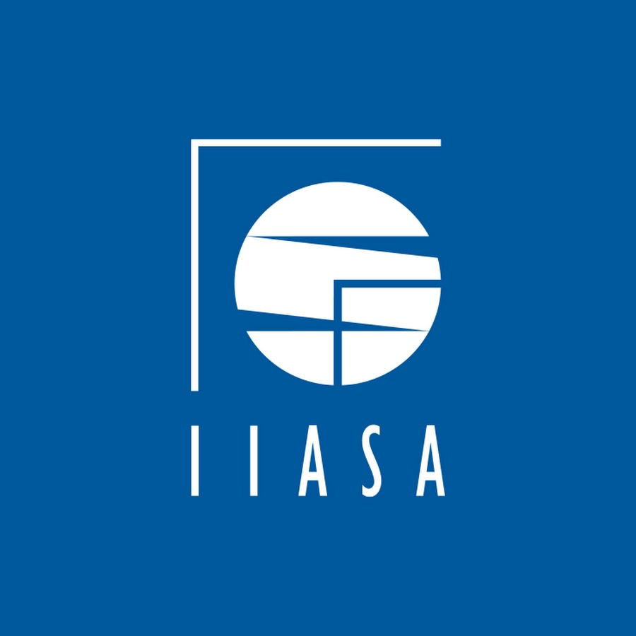
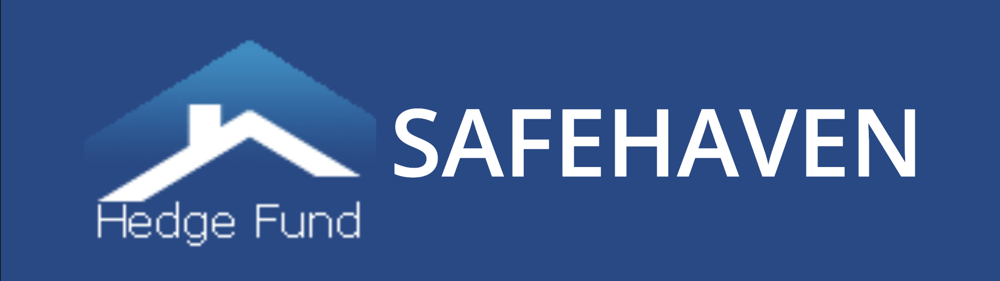
Фон, который имеет значение для серьёзной работы с клиническим ИИ.
Клинический ИИ ломается там, где качество модели принимают за клиническую состоятельность.
Большая часть ущерба проявляется после релиза: смещаются процессы и данные, качество «съедается», а систему становится трудно проследить, отладить и эксплуатационно контролировать.
Если вы не можете объяснить, что системе разрешено делать, откуда вы знаете, что она достаточно безопасна, и что происходит, когда она ошибается, — у вас нет клинической системы. У вас есть демо.
Начинаю с клинической задачи и поверхности вреда. Затем проектирую контуры контроля, которые команда сможет реально вести.
Типичная последовательность:
Примеры того, с чем приходят команды — с чёткой формулировкой, письменным итогом и привязкой к решению.
Утверждения о продукте, наборы данных, режимы отказа и пробелы, которые вы ещё не проверили — до того как вы отвечаете перед клиницистами, заказчиками или регуляторами.
Потоки данных, версионирование, надёжность, точки мониторинга и ясная ответственность при изменении конвейеров и продукта — за пределами пилота и демо.
Границы, использование инструментов, эскалация, сценарии «красной команды» и непрерывные проверки — а не игра с промптами.
Доказательная база против демо, реализм внедрения и краткий список рисков, которые могут убить инвестиционный тезис — для совета, фонда и руководства.
Senior Medical AI Engineer. Архитектура и практика оценки клинического ИИ: границы безопасности, покрытие режимов отказа, дисциплина внедрения в реальных медицинских процессах.
Исследования и клиническая работа “под ограничениями”: трассируемость, защищаемая аналитика и дисциплина исполнения — то, что напрямую переносится на доказательность и контроль клинического ИИ.
Прикладной ML на клинических данных внутри институциональных ограничений. Привлечено 1,5 млн NOK финансирования; построены устойчивые коллаборации.
Директор по науке. Операционная аналитика для mental health: мониторинг, семантические конвейеры и дашборды, ориентированные на реальные решения, а не на красивую демонстрацию.
Сооснователь. AI‑продукт в wellbeing: ответственность за границы поведения системы, качество и практическую доставку.
LLM‑процессы для пользовательских продуктов: надежность, безопасное использование инструментов и дизайн поведения за пределами “prompt‑демо”.
Сооснователь. Wellbeing‑бизнес с повышенной ответственностью: партнёрства с академией, операционная аналитика и автоматизация.
Координация проекта ERC на €1M и полный цикл клинического исследования: протокол, анализ, итоговая отчётность.
Работа с EUDA (ранее EMCDDA), EPA и IIASA в условиях публичной ответственности: трассируемость, защищаемые методы, решения при неопределенности.
Прикладная аналитика и ML в шумных, меняющихся средах: извлечение сигнала, мониторинг, решения при сдвиге распределений.
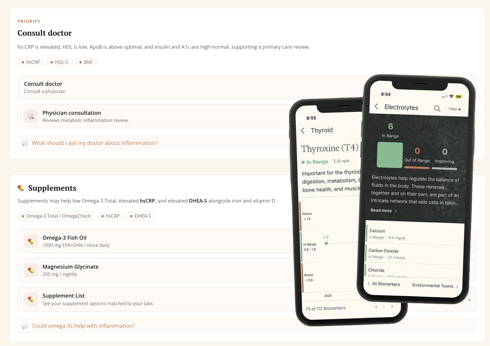
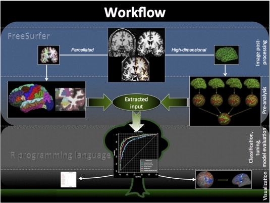
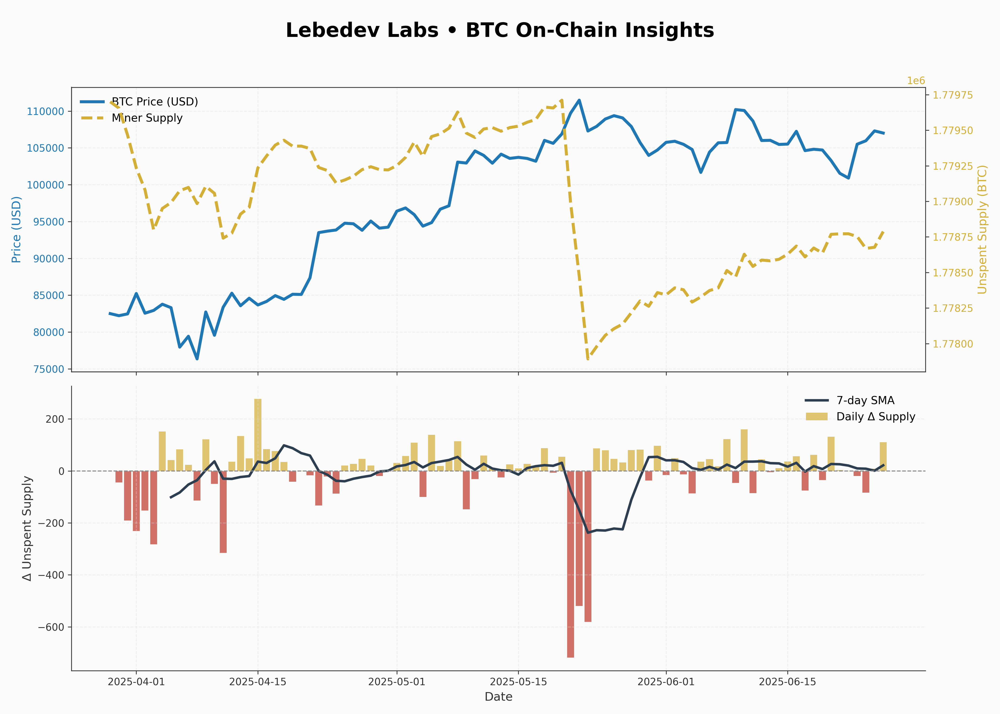
Его экспертность в аналитике больших данных и статистических методах была ключевой в ряде значимых проектов.
— Christoph Abé, PhDВ рабочих процессах Александр ловко комбинирует знания в области науки, психологии и поведенческой экономики, создавая высокоэффективные и вдохновляющие среды.
— Luigi Espasiano, MDОн сочетает техническую точность, креативность и оперативность — для него нет ничего невозможного.
— Ivan DimoskiMD/PhD, врач‑исследователь и инженер медицинского ИИ. Проектирую клинические AI‑системы там, где важнее всего оценка, ограничения безопасности и дисциплина изменений — а не бенчмарки.
Если вы разрабатываете или внедряете клинический ИИ — или готовите инвестиционное решение — и нужна архитектурная экспертиза, оценка или работа с безопасностью, напишите коротко по делу.
Укажите:
Подойдут материалы по оценке и безопасности (отчёты валидации, карты моделей, заметки по инцидентам). Если задача в моей зоне — предложу минимальный формат, который закрывает решение.